桌面与遥控器
用横向卡片组织常用入口，让电视打开后先看到自己的桌面。

从这里进入从原桌面打开 Marco TV；配置完成后可用 Home 返回。
- 左右选择卡片，上下切换分类或顶部入口，确定打开。
- 左上角打开设置，右上角查看时间、日期并进入 Wi-Fi。
- 长按确定编辑卡片；菜单键打开设置。
使用前了解卡片来自已安装应用；不附带视频会员、频道源或付费影视。图中四张卡片为演示占位。
应用、时间、风景，回到一眼看清的位置。
用遥控器就能调整，让每次按下 Home 都更顺手。
作者 Pilipala · GPL-3.0-only
如果你付费购买了本软件，请尽快向购买平台申请退款。
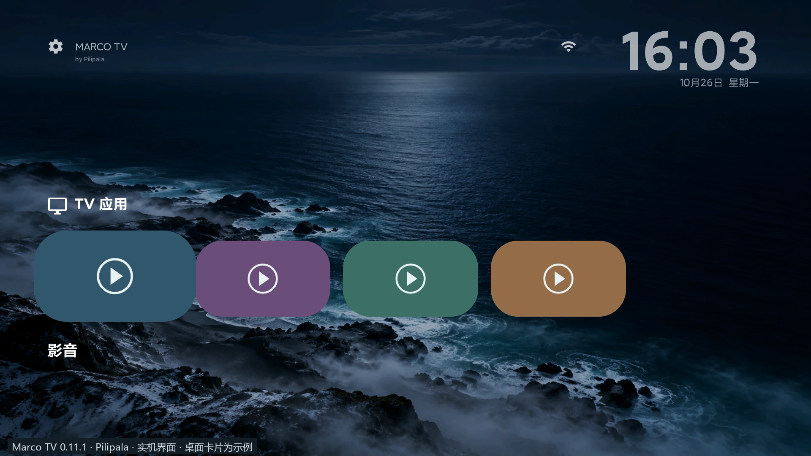
本页保留 0.11.1 历史实机截图。当前 0.12.0 正式版已整理设置分组，并加入在线更新、手机管理与应用入口检查，新菜单路径见使用说明；当前截图不代表新版菜单。手机连接与使用步骤见手机管理说明。
常用应用置顶、左侧菜单添加入口、滑块实时预览、设置逐级返回。桌面上的卡片和菜单顺序，都可以重新整理。
需要更多能力时，再开启播放卡片、Home 兼容与系统最近任务。每项功能的条件，都写在对应模块里。
选择分类或搜索功能。点缩略图切换页面，点大图查看原尺寸。
显示全部 24 个模块
用横向卡片组织常用入口，让电视打开后先看到自己的桌面。
从这里进入从原桌面打开 Marco TV；配置完成后可用 Home 返回。
使用前了解卡片来自已安装应用；不附带视频会员、频道源或付费影视。图中四张卡片为演示占位。
把经常使用的内容放进收藏，按电视提供的入口切换输入源。
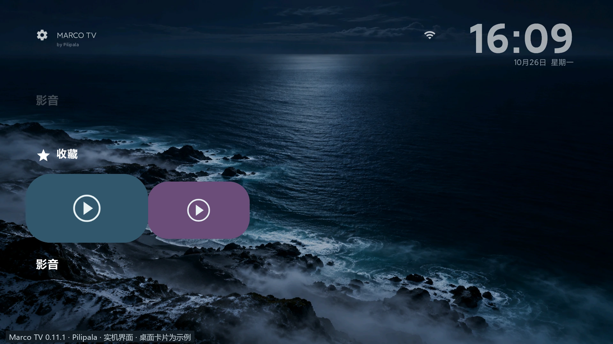
查看大图 ↗从这里进入卡片长按 → 加入收藏；桌面上下切换分类。
使用前了解输入源是否出现及能否切换由固件决定；图中的收藏、HDMI 入口为临时示例，不表示所有电视都提供相同端口。
到达最左侧后展开操作栏，常用操作不用绕进多层菜单。
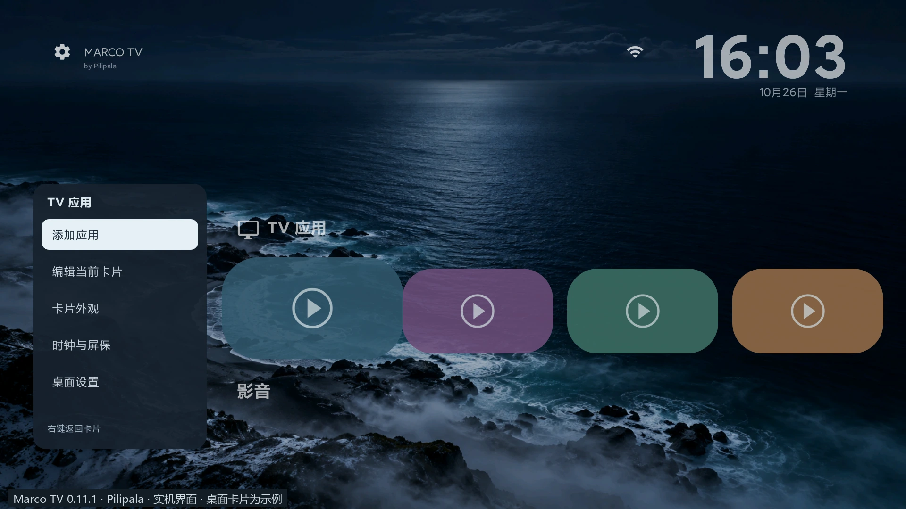
查看大图 ↗从这里进入当前行第一张卡片 → 松开左键 → 再按一次左键。
使用前了解添加应用位于左侧菜单，不占用桌面的一张应用卡片。
补上未自动识别的入口，也能按名称或包名查找。
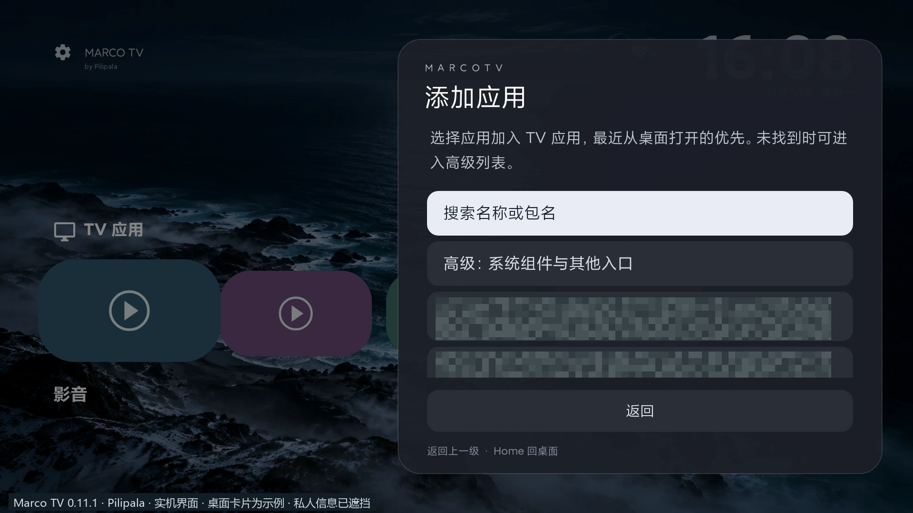
查看大图 ↗从这里进入左侧分类操作栏 → 添加应用。
使用前了解高级入口可能不适合电视或需要厂商权限；添加入口不会安装应用。实机应用名称已用马赛克遮挡。
常用应用置顶，少用入口隐藏，卸载前保留系统确认。
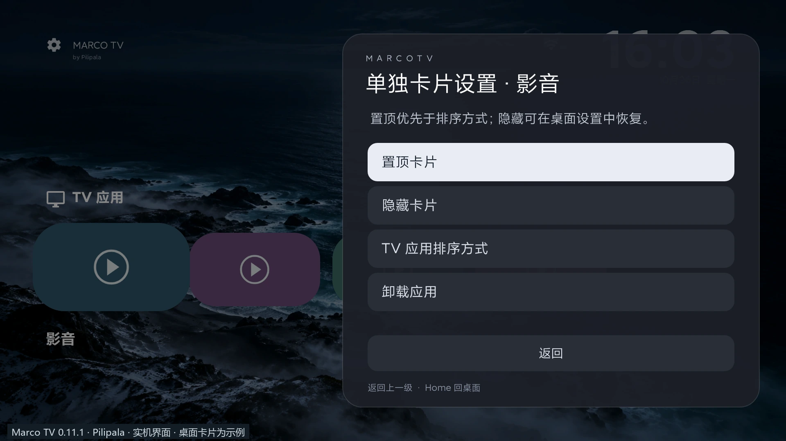
查看大图 ↗从这里进入长按卡片 → 单独卡片设置。
使用前了解系统应用可能无法卸载；隐藏不等于卸载，也不会清除应用数据。
让每张卡片适合自己的使用习惯。
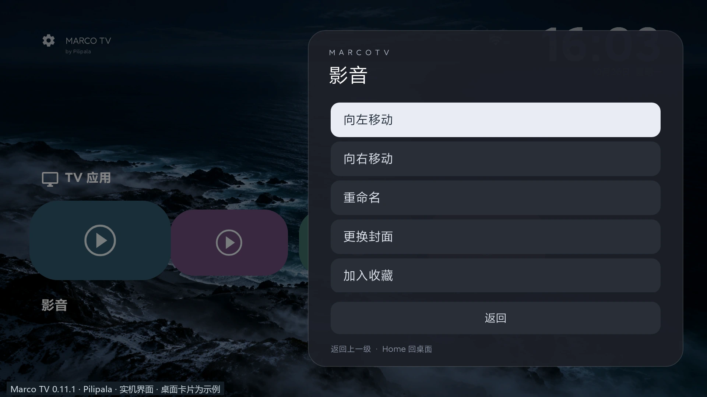
查看大图 ↗从这里进入长按卡片 → 重命名 / 更换封面 / 加入收藏。
使用前了解本地封面居中裁剪为 16:9 并复制到应用；不支持视频封面或手动调整裁切位置。部分导入流程使用系统文件选择器。
默认把最近从桌面打开的应用放在前面，也支持手动编排。
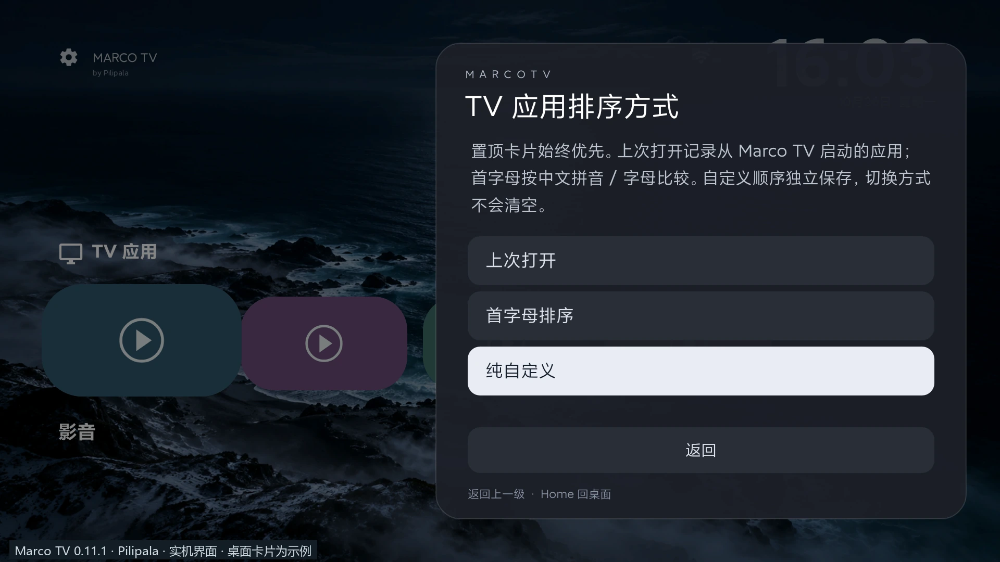
查看大图 ↗从这里进入单独卡片设置 → TV 应用排序方式；长按 → 拿起并移动卡片。
使用前了解所有模式都优先显示置顶卡片；普通组不能越过置顶组。上次打开指从 Marco TV 启动的记录，不是全系统使用历史。
边调边看，让圆角、放大程度和文字亮度有直观参照。
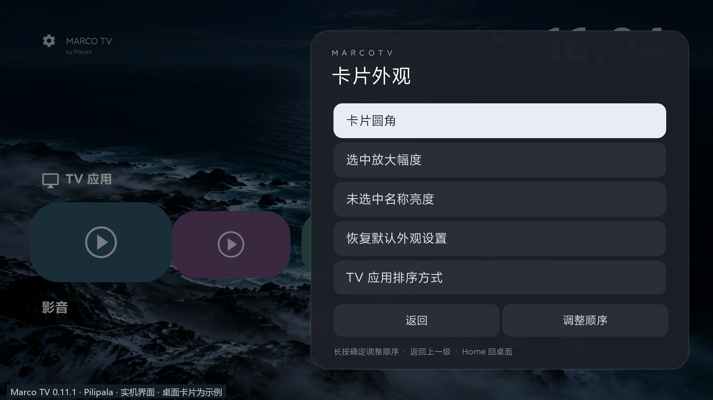
查看大图 ↗从这里进入设置 → 卡片外观。
使用前了解数值按参数的最小单位连续调节，不是只有少数预设档位；滑块修改即时保存。
雾蓝海岸、暖沙丘、极夜山脊与峡谷，也可以用自己的图片。
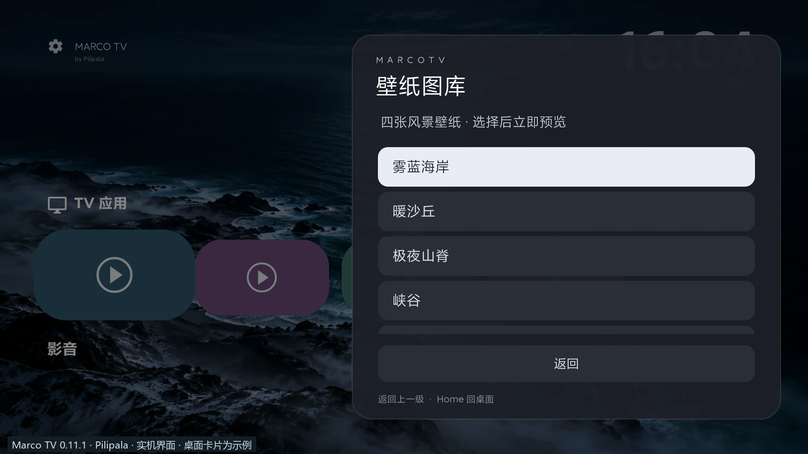
查看大图 ↗从这里进入设置 → 壁纸图库 / 更换本地壁纸。
使用前了解图片按屏幕比例居中覆盖，边缘可能裁切；亮度控制不改变电视背光。卸载或清除数据会删除内部导入图片。
粗体时钟放在右上角，日期紧随其下。
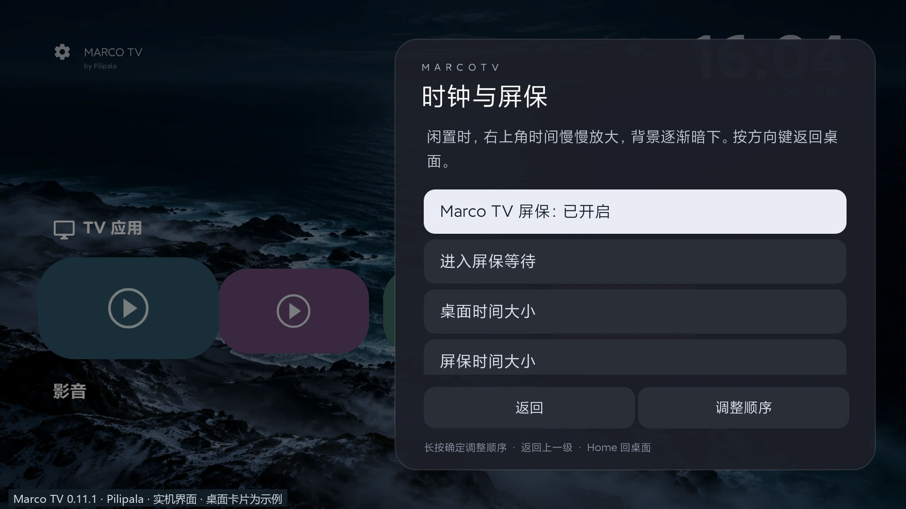
查看大图 ↗从这里进入设置 → 时钟与屏保 → 桌面时间大小。
使用前了解时间与时区来自电视系统；显示不准时应先校准系统时间。
闲置后放大并提亮时间，同时压暗壁纸。
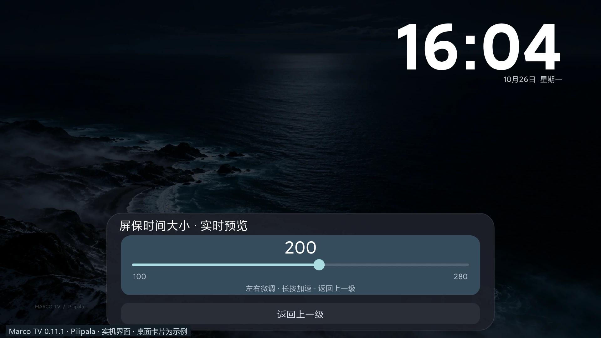
查看大图 ↗从这里进入设置 → 时钟与屏保。
使用前了解这是桌面时钟画面，不是关闭背光；厂商屏保与节能策略可能优先，需结合 Home 兼容和系统设置实测。
设置采用适合大屏的面板，返回路径清楚，常用项目可前移。
从这里进入左上齿轮或菜单键打开设置。
使用前了解设置首页、卡片外观、时钟与屏保、设备设置、开机与默认桌面共五个列表可排序；系统授权、输入法与文件选择页面仍由系统提供。
热点名称搭配信号图标，减少不必要的信息堆叠。
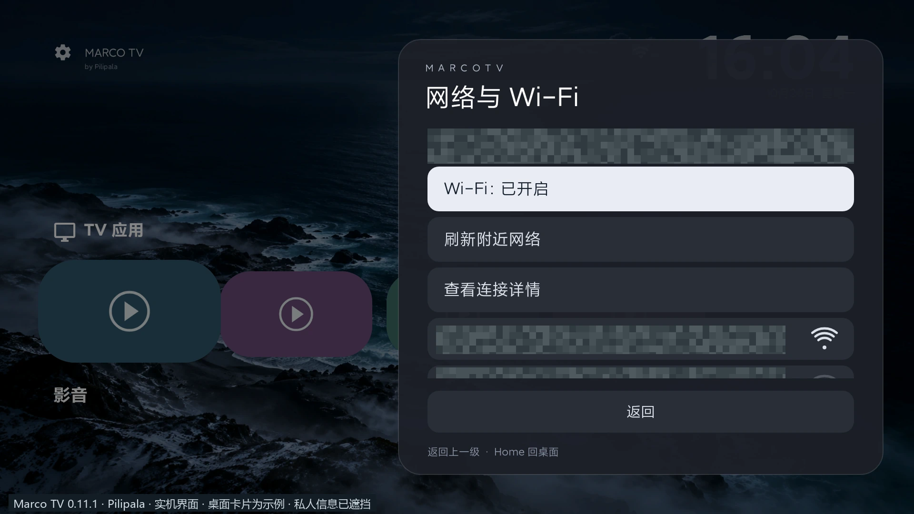
查看大图 ↗从这里进入右上 Wi-Fi 图标，或设备设置 → 网络与 Wi-Fi。
使用前了解扫描和连接能力受 Android 版本、权限及厂商限制；展示中的网络名称全部遮挡，没有公开家庭 SSID 或地址。
常用设备设置放进统一界面，反馈问题时容易核对版本。
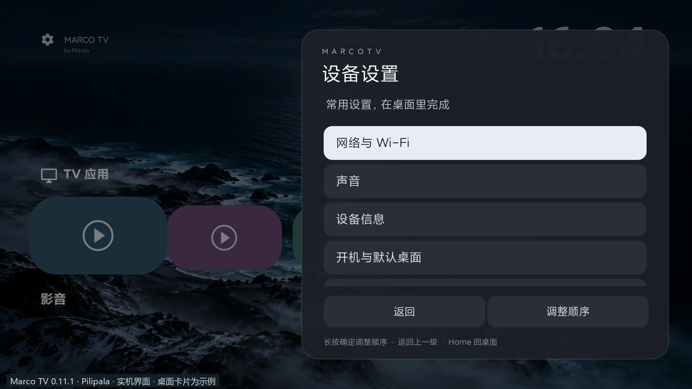
查看大图 ↗从这里进入设置 → 设备设置。
使用前了解外接音响、HDMI 音量联动等行为由系统和设备决定；设备信息不等于对同品牌全部型号的适配承诺。
回到桌面时，仍能看到播放器提供的标题、封面和状态。
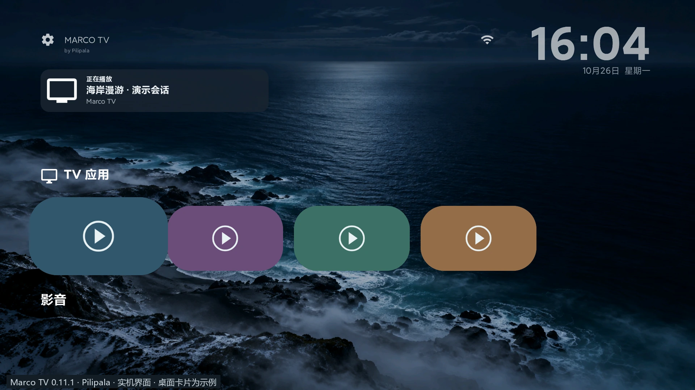
查看大图 ↗从这里进入设备设置 → 正在播放卡片 → 允许通知使用权。
使用前了解图中为无音频的临时演示会话；软件不提供片源。没有系统媒体会话时不伪造播放卡片，不读取普通通知内容。
有多个播放器时自己选择展示来源，也能临时收起卡片。
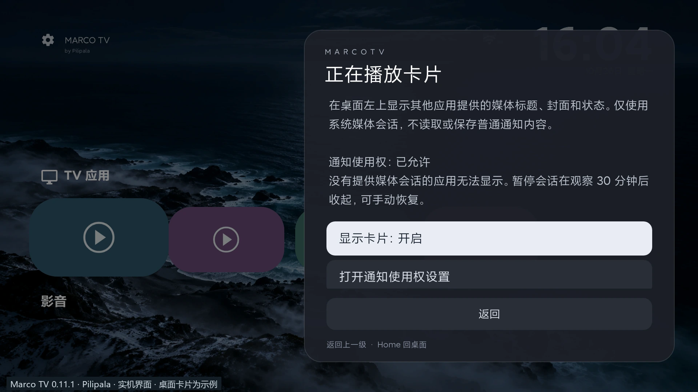
查看大图 ↗从这里进入播放卡片 → 确定；设备设置 → 正在播放卡片。
使用前了解控制能力取决于播放器。来源选择与临时隐藏只保留在本次进程；暂停会话观察满 30 分钟后收起，不记录观看历史。
堆叠卡片返回上次页面，支持清除单个系统任务。
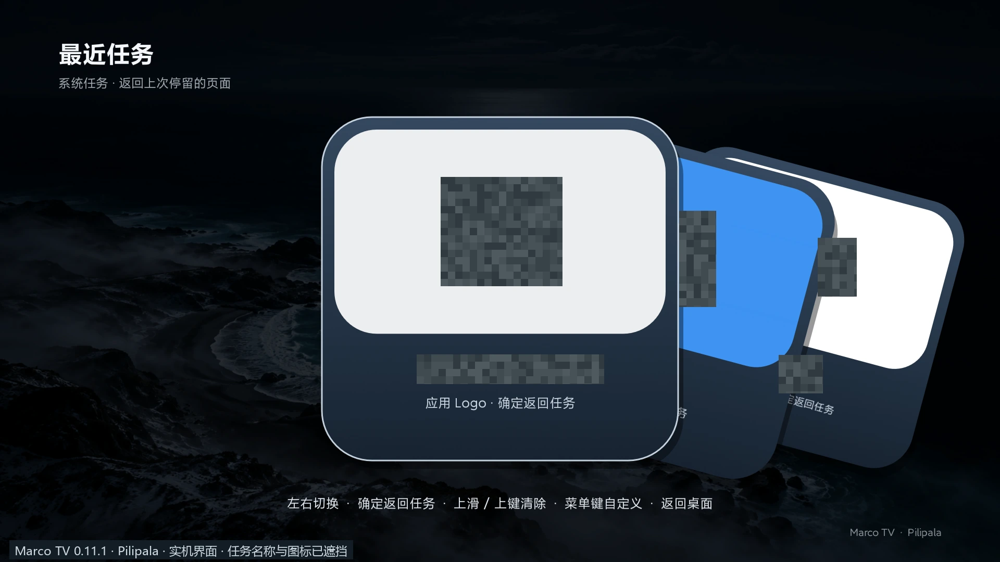
查看大图 ↗从这里进入先按安装说明启动电脑辅助服务，再开启双击 Home。
使用前了解读取系统任务而非全部进程。清除只在系统与窗口栈支持时执行，不是清内存工具。优先系统缩略图，本次实测电视不提供缩略图，使用 Logo；名称和图标已遮挡。
把卡片大小、倾斜和动画调到适合屏幕与遥控器的程度。
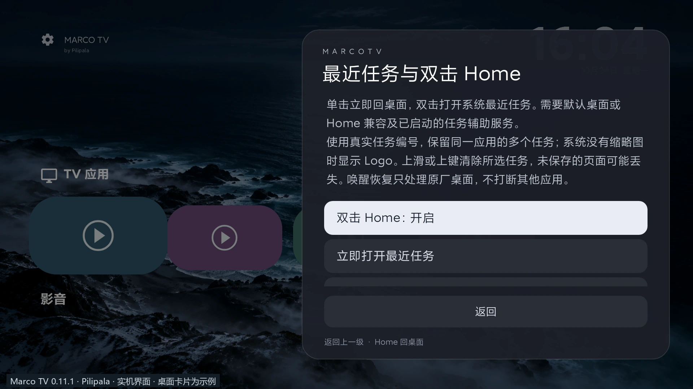
查看大图 ↗从这里进入最近任务页按菜单键，或设置 → 最近任务与双击 Home。
使用前了解完整重启、断电或更新 APK 后，辅助服务需从电脑重新启动。授权、启用状态和唤醒恢复开关不随备份迁移。
按电视能力选择接管方式，并把状态留在界面里。
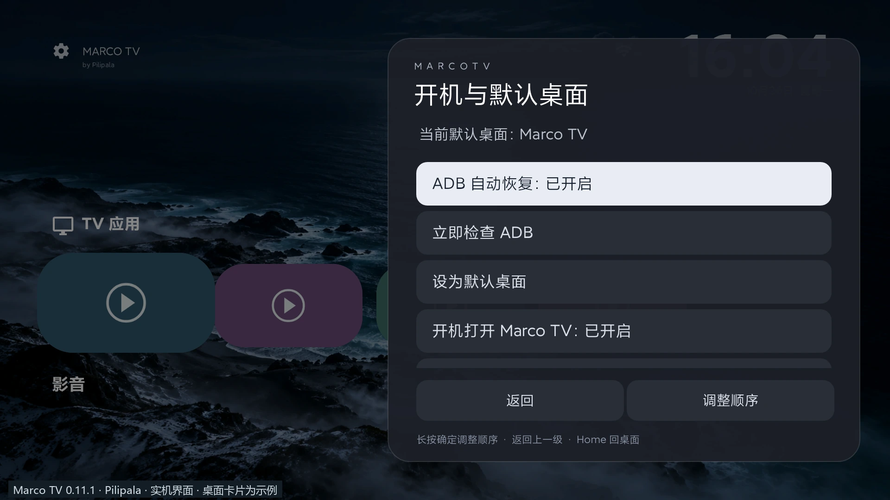
查看大图 ↗从这里进入设置 → 开机与默认桌面。
使用前了解普通 APK 不能保证重启后打开所有品牌的网络 ADB 端口，也不能保证所有固件的 Home 接管。初装保留原厂桌面，先完成返回与撤销验证。
先试用桌面，再按需要开启系统能力。
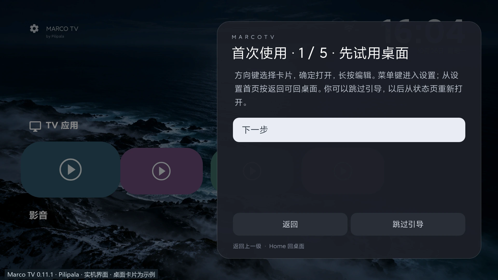
查看大图 ↗从这里进入首次全新安装；设置 → 设置状态与引导可重新查看。
使用前了解完成引导不等于设备权限已全部授予；以状态页和实际操作为准。
把默认桌面、权限、服务和播放状态集中在同一处。
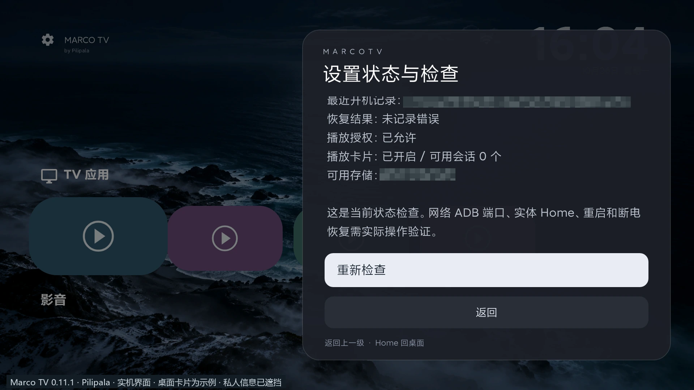
查看大图 ↗从这里进入设置 → 设置状态与引导 → 状态检查。
使用前了解状态截图仅演示字段，不作为长期稳定运行证明；检查记录和存储数值已遮挡。
把外观和卡片配置带走，恢复前先看会改变什么。
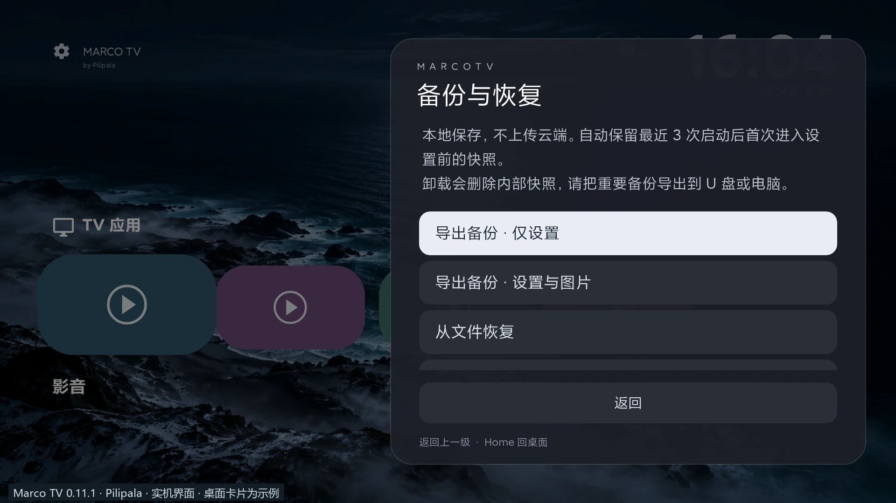
查看大图 ↗从这里进入设置 → 备份与恢复。
使用前了解本版没有云端同步。备份不含 APK、账号密码或系统权限，但包含私人应用配置和自选图片，不能直接公开。图中只展示恢复预览，未执行恢复。
遇到异常时先检查、预览报告，再决定是否分享。
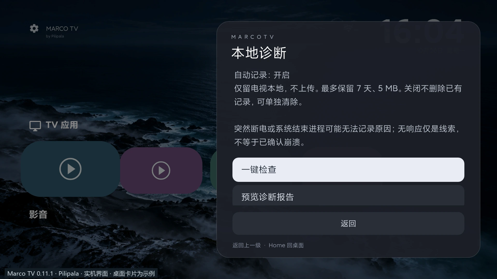
查看大图 ↗从这里进入设置 → 本地诊断。
使用前了解不自动上传或代发 GitHub 问题。断电、系统结束进程可能没有完整原因；疑似无响应不等于系统确认的 ANR。公开截图已遮挡检查时间。
Marco TV 免费发行，没有会员、激活码或购买入口。
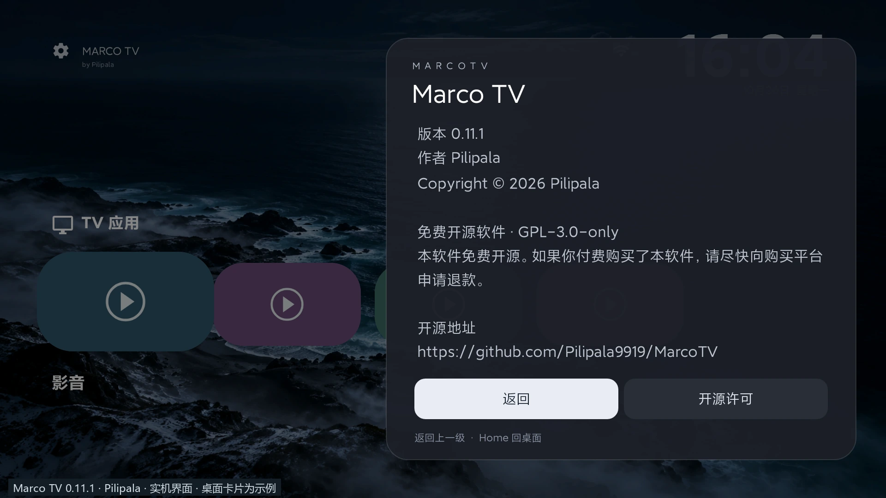
查看大图 ↗从这里进入设置 → 关于 Marco TV；GitHub 查看源码与版本。
使用前了解如果你付费购买了本软件，请尽快向购买平台申请退款。免费发行提示不改变 GPL 允许的权利；第三方资源保留其自身许可。
没有匹配的模块，试试其他关键词。
内置生成壁纸，也支持导入自己的图片。以下为原始壁纸预览，实际桌面会按设置压暗和裁切。
最低 Android 6.0。当前实测 Xiaomi MiTV-ASTP0 / Android 9。其他型号需逐项验证，三星 Tizen、LG webOS、Apple tvOS 等不能直接安装此 APK。
以下为 Marco TV 0.11.1 的实机界面。桌面卡片、收藏、输入源与播放会话使用临时示例数据；真实应用名称、图标、Wi-Fi 名称、检查时间及存储数值已按需遮挡。示例不代表软件预装应用、片源或会员。截图仅用于功能展示，不作为各品牌兼容性或持续运行的证明。
马赛克区域使用独立生成的不透明色块替换原像素后导出。公开文件没有原始截图、界面树、真实日志或备份，也不保留图片 EXIF。演示期间未确认恢复、卸载应用或切换网络。
本页无分析统计、远程字体或第三方脚本。访问在线页面仍由 GitHub Pages 提供网络服务。查看公开素材清单 · 软件隐私说明 · 验证范围